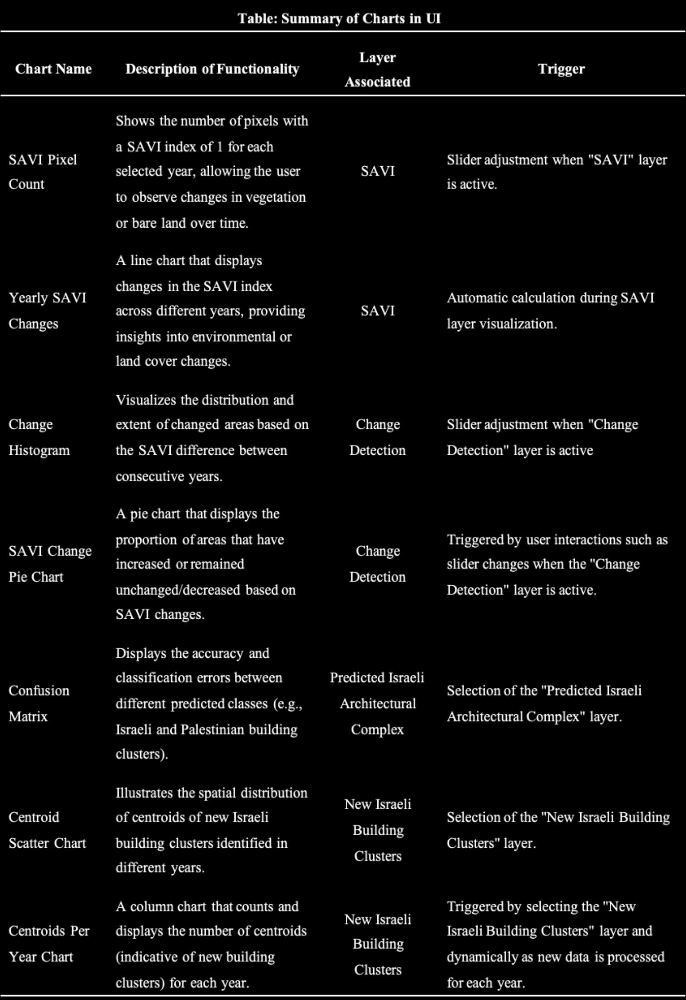

New Israeli Settlement Identification in the West Bank

Project Summary
The hot war in Gaza is well known in the Israeli-Palestinian conflict, but the slow erosion of the West Bank has received little attention.
In the West Bank of the Jordan River, Israel continues to encroach on Palestinian land by establishing illegal outposts, transforming them into settlements, and eventually legalizing them. The purpose of this application is to detect these new settlements.
Many journalists hope to mitigate the situation of Palestinian victimization through early intervention and raise public awareness about the status of Palestine beyond Gaza. However, sometimes they manually search for these targets on Google earth. We hope to help them quickly locate these targets through this application.
Problem Statement
The purpose of this application is to use satellite imagery to find and mark new Israeli settlements in the West Bank. The target has certain characteristics. Finding a series of methods to filter and mark them with the features is the main problem the application needs to solve.
For target users, the application should also provide a user interface in which they can quickly query the location and number of these newly emerged territorial encroachments.
Through this application, we hope that it can make a small contribution to arousing a more comprehensive public understanding of the Palestinian-Israeli conflict.
End User
- Journalists, researchers and international organizations
Many newly Israeli settlements are illegal. Usually when settlements develop to a certain scale, Israel will declare them legal. Early detection can help the international community intervene earlier. Some reporters did a manual blanket search through Google Earth. We hope this helps them resolve the issue quickly.
- Public
The public can also use the app to understand how Israel has invaded Palestinian land, ultimately leading to the pockmarked borders of the area’s controlled areas.
This news article provides a detailed look at the Israeli-occupied territories.
Data
Main data:
- Harmonized Sentinel-2 MSI: MultiSpectral Instrument, Level-2A. (Surface Reflectance)
- The resolution is 10m.
- The time span is 2017-03-28 – Present.
Although our main purpose is to detect only the latest Israeli settlements, to use machine learning to distinguish settlement ownership, the larger the data set, the better. Therefore, we use all available years for identification and training. To make full use of the data, we cut the data by year with 04-01 as the boundary, and then preprocessed the data of each year. For example, the data in 2023 corresponds to 2023-04-01 - 2024-04-01.
Other data:
Methodology
This application initially uses the SAVI to identify target land types, then employs change detection to identify newly cultivated land plots that appear each year. These plots include changes in desert areas and minor agricultural land developments. Therefore, it is necessary to use shape and area filtering to select plots of specific areas and shapes, and subsequently pinpoint their central locations. Finally, we attempt to distinguish whether these plots belong to Israel through machine learning.
- Feature Selection(NDVI, SAVI), Land Cover Classification(Random Forest)
- Change detection(difference, T-test)
- Morphological Analysis, Area and Shape Filtering
- Classification(Support Vector Machine, Random Forest)

Interface
The main function is to provide target points to help users quickly locate the latest settlements or outposts. The left side is the operation panel. Users can select “New Israeli Settlement Locations” button and a specific year to obtain the target position for that year. We also provide quantitative statistics and line charts to help users understand their changing trends.
Additionally, users can select other options such as “West Bank Border”, “Control Areas”, “SAVI”, etc. We also provide layers of some background and analysis processes to help users better understand the working principle of the application. Users can freely view these layers, and look for image features that interest them.
The Application
How it Works
// The workflow of this application is clearly step-by-step, making it possible to distribute tasks evenly and reasonably.
// The entire application development is divided into five parts, and each member is responsible for one part.
// In the exploration process, some of the ineffective methods were not reflected in the final application. In order to reflect the contribution of each member, the comments in subsequent code blocks will describe what the members are responsible for and what is not reflected.
// Manual annotation for machine learning is completed by the group.Part 1: Setting up and SAVI-based screening
First, we extract satellite images from Sentinel-2 and filtering out cloud-obscured ones. These images are then subjected to machine learning analysis to identify surface features such as roads, farmland, forests, cities, and bare land. Various feature collections are imported to provide essential geographical context, including West Bank borders, Palestinian and Israeli-Palestinian control areas, and points indicating illegal appropriation.
// ---------------------------------------------------------------------------------
// Beginning of part1
// Developed by Mingyu Bi
// Unreflected workload includes attempts to classify land based on RF
// ---------------------------------------------------------------------------------
// Import West Bank borders.
var westbank = ee.FeatureCollection("projects/ee-casa0025insightexplorers/assets/WestBankBorder");
// Import Palestinian control area.
var areaA = ee.FeatureCollection("projects/ee-casa0025insightexplorers/assets/areaA");
// Import Israeli-Palestinian control area.
var areaB = ee.FeatureCollection("projects/ee-casa0025insightexplorers/assets/areaB");
var redpoint=ee.FeatureCollection("projects/ee-casa0025insightexplorers/assets/illegal_appropriation")
// Date range.
var start='2023-04-01';
var end='2024-04-01';
// Bands.
var bands = ['B2','B3','B4','B5','B6','B7','B8','B8A','B11','B12'];
// Filter the Sentinel-2 collection and select the less cloudy image.
var sentinel = ee.ImageCollection('COPERNICUS/S2_HARMONIZED')
.filter(ee.Filter.date(start, end))
.filter(ee.Filter.lt('CLOUDY_PIXEL_PERCENTAGE', 10))
.mean()
.select(bands);
// Visualization of sentinel.
var sentinel_settings = {
min: 0.0,
max: 3000,
bands:['B4', 'B3', 'B2'],
opacity:1
};
Map.addLayer(sentinel.clip(AOI), sentinel_settings, 'Sentinel',false);
// Visualization of westbank borders.
var westbank_settings = {
color: 'FFFFFF',
fillColor: '00000000',
};
Map.addLayer(westbank, westbank_settings, 'West Bank Border');
// Study area.
var study_area = areaA.merge(areaB);
var study_geometry = study_area.union().geometry();
var buffered_geometry = study_geometry.buffer(200);
Map.addLayer(buffered_geometry, {color: 'yellow'}, 'Study Area',false);For the purpose of machine learning training in part 4, we need to increase the amount of data, so two functions are defined: one calculates SAVI, and the other retrieves yearly Sentinel-2 images for analysis over time.
// ---------------------------Create functions.---------------------------
// Function for calculating SAVI.
function SAVI(image) {
// Clip area.
var sentinel_westbank = image.clip(westbank);
var sentinel_study = image.clip(buffered_geometry);
// Calculate SAVI.
var savi = sentinel_westbank.expression(
'(NIR - RED) / (NIR + RED + 0.5) * (1 + 0.5)', {
'NIR': sentinel_westbank.select('B8'),
'RED': sentinel_westbank.select('B4')
}
).rename('SAVI');
var barelandSAVI = savi.lt(0.2);
return barelandSAVI;
}
function YearlyImages(startYear, endYear, dateSuffix, bands) {
// Initialize an empty dictionary to store a set of images by year.
var yearly_sentinel_images = ee.Dictionary();
// Loop through each year from startYear to endYear.
for (var year = startYear; year <= endYear; year++) {
var start = year + dateSuffix;
var end = (year + 1) + dateSuffix;
var sentinel = ee.ImageCollection('COPERNICUS/S2_HARMONIZED')
.filter(ee.Filter.date(start, end))
.filter(ee.Filter.lt('CLOUDY_PIXEL_PERCENTAGE', 10))
.mean()
.select(bands);
yearly_sentinel_images = yearly_sentinel_images.set(year.toString(), sentinel);
}
return yearly_sentinel_images;
}Apply the function to obtain year-by-year images and calculate SAVI. The results are organized into a dictionary for easy call in the next step.
// ---------------------------Apply the function.---------------------------
// Create yearly images.
var sentinel_2017_2023 = YearlyImages(2017, 2023, '-04-01', bands);
// Iterate over the dictionary and apply SAVI function.
var savi_2017_2023 = ee.Dictionary();
var keys = sentinel_2017_2023.keys();
keys.getInfo().forEach(function(key) {
var image = ee.Image(sentinel_2017_2023.get(key));
var savi_image = SAVI(image);
savi_2017_2023 = savi_2017_2023.set(key, savi_image); // savi_2017_2023 is the dictionary for Change detection.
});
// Visualization.
var visParams = {
min: 0.0,
max: 1.0,
palette: ['2a2A28', 'FF0000']
};
var keys = savi_2017_2023.keys();
keys.getInfo().forEach(function(key) {
var savi_image = ee.Image(savi_2017_2023.get(key));
Map.addLayer(savi_image, visParams, 'SAVI_' + key,false);
});
// ---------------------------------------------------------------------------------
// End of part1
// ---------------------------------------------------------------------------------Part 2: Change detection
Then, a function called calculateChange is defined, which computes differences in bare land between consecutive years, aiding in identifying new roads or settlements. This function iterates from 2017 to 2023, analyzing each yearly pair and visualizing the changes for deeper understanding.
The SAVI analysis result obtained in the previous step is a binary image, so among various methods, direct difference can obtain the best result.
// ---------------------------------------------------------------------------------
// Beginning of part2
// Developed by Xiaolin Liu
// Unreflected workload includes T-test on different satellite images sets or analysis results
// ---------------------------------------------------------------------------------
// Function to calculate change between two images
function calculateChange(image1, image2, year1, year2) {
// Calculate the difference between the two images
var diff = image2.subtract(image1).abs(); // Taking absolute value of the difference
// Visualize the change
var layerName = 'Change ' + year1 + ' to ' + year2;
Map.addLayer(diff, {min: 0, max: 0.5, palette: ['2A2A28', 'FF0000']}, layerName);
}
// Iterate over the years and calculate change
for (var i = 2017; i < 2023; i++) {
var image1 = ee.Image(savi_2017_2023.get(i.toString()));
var image2 = ee.Image(savi_2017_2023.get((i + 1).toString()));
calculateChange(image1, image2, i, i + 1);
}
// ---------------------------------------------------------------------------------
// End of part2
// ---------------------------------------------------------------------------------Part 3: Change filter
In part 2, subtraction will capture the appearance and disappearance of bare land at the same time. Therefore, this section is specifically designed to screen, monitor, and analyze areas where the Soil Adjustment Vegetation Index (SAVI) has decreased over several consecutive years. It starts by identifying areas between adjacent years where the SAVI value has decreased, in order to determine regions of vegetation loss, especially those transitioning from above 0.2 in SAVI to below 0.2.
After these changes are identified, the code applies specific filtering functions to exclude smaller patches, thereby reducing noise and errors to ensure the reliability and accuracy of the results. The filtered areas are displayed in red on the map for direct visualization and analysis. Moreover, the code vectorizes these areas and extracts centroids highlighted in yellow, which are crucial for further geospatial analysis. Ultimately, these centroids and areas are added to the map.
// ---------------------------------------------------------------------------------
// Beginning of part3
// Developed by Xinyu Guo, Yilan Bu
// Yilan Bu: Optimized the change detection step so that the acquired image is one-way (bare ground appears) and filter
// Xinyu Guo: Filter and extract the center point of the target geometry
// ---------------------------------------------------------------------------------
// Filter out small patches based on connected pixel size.
function filterSmallPatches(image, minPixels) {
var connected = image.connectedPixelCount();
return image.updateMask(connected.gte(minPixels));
}
// Function to compare SAVI between two consecutive years, identify changes, and filter small patches.
function compareAndFilterYearlySAVI(yearlyImages, startYear, endYear, minPixels) {
for (var year = startYear; year < endYear; year++) {
var currentImage = ee.Image(yearlyImages.get(year.toString()));
var nextImage = ee.Image(yearlyImages.get((year + 1).toString()));
// Identify areas where SAVI decreased.
var transitionToRed = currentImage.gte(0.2).and(nextImage.lt(0.2));
// Filter out small patches from the identified areas.
var filtered_change = filterSmallPatches(transitionToRed, minPixels);
// Create a visualization layer to show these changes.
var changeVisualization = filtered_change.updateMask(filtered_change)
.multiply(255)
.toByte();
var changeParams = {
min: 0,
max: 255,
palette: ['000000', 'FF0000'] // Display changes in red.
};
Map.addLayer(changeVisualization, changeParams, 'Filtered Change to Barren ' + year + '-' + (year+1));
}
}
// Apply the function to compare and filter SAVI across years and visualize changes.
compareAndFilterYearlySAVI(savi_2017_2023, 2017, 2023, 100);
// Function to compare SAVI between two consecutive years, identify changes, filter small patches, and extract centroids.
function compareFilterAndExtractCentroids(yearlyImages, startYear, endYear, minPixels) {
var changeLayersDict = {}; // Dictionary to hold change layers
var centroidLayersDict = {}; // Dictionary to hold centroid layers
for (var year = startYear; year < endYear; year++) {
var currentImage = ee.Image(yearlyImages.get(year.toString()));
var nextImage = ee.Image(yearlyImages.get((year + 1).toString()));
// Identify areas where SAVI decreased from above 0.2 to below 0.2.
var transitionToRed = currentImage.gte(0.2).and(nextImage.lt(0.2));
// Filter out small patches from the identified areas.
var filteredChange = filterSmallPatches(transitionToRed, minPixels);
// Create vectors from the filtered change areas.
var vectors = filteredChange.reduceToVectors({
reducer: ee.Reducer.countEvery(),
geometry: study_geometry,
scale: 30,
maxPixels: 1e13
});
// Extract centroids of the vectors.
var centroids = vectors.map(function(feature) {
return feature.geometry().centroid();
});
// Add vectors and centroids to their respective dictionaries.
changeLayersDict[year] = filteredChange;
centroidLayersDict[year] = centroids;
}
return {changeLayers: changeLayersDict, centroidLayers: centroidLayersDict};
}
// Apply the function and add the centroid layers to the map.
var results = compareFilterAndExtractCentroids(savi_2017_2023, 2017, 2023, 100);
// Access the centroid layers for further use.
var centroidLayers = results.centroidLayers;
// Apply the function and add the centroid layers to the map.
var results = compareFilterAndExtractCentroids(savi_2017_2023, 2017, 2023, 100);
// Access the centroid layers for further use.
var centroidLayers = results.centroidLayers;
// Example: Add the centroid layers for specific years to the map.
Map.addLayer(centroidLayers[2017], {color: 'yellow'}, 'Centroids 2017-2018');
Map.addLayer(centroidLayers[2018], {color: 'yellow'}, 'Centroids 2018-2019');
Map.addLayer(centroidLayers[2019], {color: 'yellow'}, 'Centroids 2019-2020');
Map.addLayer(centroidLayers[2020], {color: 'yellow'}, 'Centroids 2020-2021');
Map.addLayer(centroidLayers[2021], {color: 'yellow'}, 'Centroids 2021-2022');
Map.addLayer(centroidLayers[2022], {color: 'yellow'}, 'Centroids 2022-2023');
// ---------------------------------------------------------------------------------
// End of part3
// ---------------------------------------------------------------------------------Part 4: Use Machine Learning to Identify the Building Clusters of Israel
In part 3 we get a series of target points, but some desert variations and possibly Palestinian land will also be included. And it’s hard to tell who exactly the bare land belongs to. Therefore we try to capture features that are imperceptible to the human eye through machine learning.
Palestinian-Israeli architectural complexes vary greatly. The current complex corresponds to bare land on historical satellite images. We attempted to guide the classification of bare land by classifying building groups.
// ---------------------------------------------------------------------------------
// Beginning of part4
// Developed by Yilan Bu
// Unreflected workload includes attempts at various classification orders and methods
// ---------------------------------------------------------------------------------
// Pre-Processing
// Calculate GLCM
var glcm=sentinel.toUint16().select('B8').glcmTexture({size: 4})
// Calculate NDWI
var ndwi=sentinel.normalizedDifference(['B3','B8'])
.select(['nd'],['ndwi']);
// Calculate NDVI
var ndvi=sentinel.normalizedDifference(['B8','B4'])
.select(['nd'],['ndvi']);
// Calculate NDBI
var ndbi=sentinel.normalizedDifference(['B11','B8'])
.select(['nd'],['ndbi']);
// Clip the map
var westbankborder = sentinel.clip(westbank);
// Update the mask
var westbank_image= westbankborder
.updateMask(ndwi.lt(0.3))
.updateMask(ndvi.lt(0.2))
.updateMask(ndbi.gt(0.1))
.addBands(glcm)
.addBands(ndbi)
.select(bands);
// Display the results
Map.centerObject(westbank, 8); // Center the map on the certain area with an appropriate zoom level
Map.addLayer(westbank_image, {bands: ['B4', 'B3', 'B2'], max: 2000}, 'westbankborder');Then, we manually annotated Israeli and Palestinian building clusters. To enhance precision, we also marked desert areas due to the difficulty in distinguishing them from buildings using the NDVI and NDBI.
Therfore, we divided three classes:
Class 1: Israel building clusters
Class 2: Palestinian building clusters
Class3: Desert areas
// Generating Labeled Data
// Take random samples of points from within these polygons
// Take points in each polygon
var points_in_Israeli = mergedAreas1235.map(function(feature) {
return ee.FeatureCollection.randomPoints(feature.geometry(), 250)
.map(function(point) {
return point.set({'class': 0});
});
}).flatten();
var points_outside_Israeli = Outside_Israeli.map(function(feature) {
return ee.FeatureCollection.randomPoints(feature.geometry(), 400)
.map(function(point) {
return point.set({'class': 1});
});
}).flatten();
var desert_points = Desert_Areas.map(function(feature) {
return ee.FeatureCollection.randomPoints(feature.geometry(), 1080)
.map(function(point) {
return point.set({'class': 2});
});
}).flatten();
// Create one feature collection
var Israeli_points = ee.FeatureCollection([points_in_Israeli,
points_outside_Israeli,
desert_points
])
.flatten()
.randomColumn();
// Create a sample dataset from the merged marked area
var split=0.7
var training_samples = Israeli_points.filter(ee.Filter.lt('random', split));
var validation_sample = Israeli_points.filter(ee.Filter.gte('random', split));
// Obtain training set
var training = westbank_image.sampleRegions({
collection: training_samples,
properties: ['class'],
scale: 10,
});
// Obtain validation set
var validation = westbank_image.sampleRegions({
collection: validation_sample,
properties: ['class'],
scale: 10
});
// Select classification features and training classifiers
var model = ee.Classifier.smileRandomForest(500)
.train(training, 'class');
print('Training class 0:', training_samples.filter(ee.Filter.eq('class', 0)).size());
print('Training class 1:', training_samples.filter(ee.Filter.eq('class', 1)).size());
print('Training class 2:', training_samples.filter(ee.Filter.eq('class', 2)).size());
print('Validation class 0:', validation_sample.filter(ee.Filter.eq('class', 0)).size());
print('Validation class 1:', validation_sample.filter(ee.Filter.eq('class', 1)).size());
print('Validation class 2:', validation_sample.filter(ee.Filter.eq('class', 2)).size());
// Make prediction
var prediction = westbank_image.classify(model);
// Select Israeli architectural complex
var Israeli_prediction=prediction.updateMask(prediction.eq(0));
// Add layer
Map.addLayer(Israeli_prediction, {palette:'red'}, 'Predicted Israeli Architectural Complex');
// Validate the model with the validation dataset and classify the samples
var validated = validation.classify(model);
// Compute the error matrix for the validation results to assess the accuracy
var testAccuracy = validated.errorMatrix('class', 'classification');
// Print the confusion matrix to the console for evaluation
print('Confusion Matrix ', testAccuracy);
// ---------------------------------------------------------------------------------
// End of part4
// ---------------------------------------------------------------------------------The model’s accuracy is quite high, at around 90%. In detail, the model performs best when predicting desert regions, followed by Israeli building clusters. Confusion primarily occurs between Israeli and Palestinian building clusters, as well as between Israeli building clusters and desert regions.
However, during the annotation and recognition process, we made an unexpected discovery that most newly developed lands were developed by Israel, and it would be almost impossible for Palestine to engage in new land excavation.
Therefore, we did not use the part4 results for filtering, and we believed that the points obtained by part3 were sufficient for users. These points include only Israel and the desert, with the desert concentrated on the east side and easily distinguishable by the human eye. Applying part4 filtering may result in correct objects being excluded, which is less acceptable than deserts being included.
Part 5: Create UI Panel
This code segment primarily establishes and configures a user interface (UI) panel for interactively displaying and managing map layers. The panel allows users to select from various map layers such as “West Bank Border”, “SAVI”, “Change Detection”, and “New Israeli Settlement Locations” through a dropdown menu. The interface updates the displayed map layers and associated information based on the user’s selection.
Additionally, the panel includes a slider for selecting years, which influences the displayed content of map layers, such as SAVI indices or change detection results. Moreover, the panel supports the display of additional control elements like information buttons and year labels, which are displayed conditionally depending on the currently selected map layer.
These controls are dynamically managed through written functions, such as showing and hiding specific controls, updating map layers, or handling map click events, thereby enhancing user interaction.

// ---------------------------------------------------------------------------------
// Beginning of part5
// Developed by Junrun Chen
// Beautified by Xiaolin Liu
// ---------------------------------------------------------------------------------
//////////////////////////////////////////////////////////////////////////////////
// create UI Panel
var panel = ui.Panel();
panel.style().set({
width: '400px',
padding: '8px'
});
ui.root.insert(0, panel);
// Layer select change event handler
var layerSelect = ui.Select({
items: ['West Bank Border', 'SAVI', 'Change detection', 'Predicted Israeli Architectural Complex','New Israeli Building Clusters'],
onChange: handleLayerChange
});
// Function to handle layer changes
function handleLayerChange(selected) {
currentLayer = selected;
var showSlider = selected === 'SAVI' || selected === 'Change detection'|| selected === 'New Israeli Building Clusters';
var showChart = selected === 'SAVI'; // Only show chart for SAVI layer
var showLabels = selected === 'SAVI' || selected === 'Change detection'|| selected === 'New Israeli Building Clusters';
var showInfoButton = selected === 'Predicted Israeli Architectural Complex';
// Update the visibility of UI components
//toggleInfoButton.style().set('shown', showInfoButton);
//updateLabelPanelVisibility(showLabels);
yearSlider.style().set('shown', showSlider);
yearLabel.style().set('shown', showSlider);
// Reset and update map layers
Map.layers().reset();
updateMapLayers(selected);
// Update the display of charts
if (showChart) {
updateChart(yearSlider.getValue());
} else {
clearChart();
}
// Display the confusion matrix if required
if (selected === 'West Bank Border'){
// New Israeli Settlement Identification
var boldText = ui.Label({
value: 'New Israeli Settlement Identification In The West Bank',
style: {fontWeight: 'bold', fontSize: '14px'}
});
panel.add(boldText);
// Description 1
var description1 = ui.Label({
value: 'Users can explore different contents through the tabs on the upper left, and detailed descriptions will be presented on the corresponding pages. In addition to directly querying new Israeli settlements, the app also visualizes the entire analysis process. Users are free to explore what is happening at each step.',
style:{fontSize:'12px'}
});
panel.add(description1);
var link = ui.Label({
value: 'For more information: https://www.aljazeera.com/news/2021/5/18/mapping-israeli-occupation-gaza-palestine',
style:{fontSize:'12px',color: '000129'}
})
panel.add(link);
// Instructions
var title1 = ui.Label({
value: 'Instructions:',
style: {fontWeight: 'bold', fontSize: '12px'}
});
panel.add(title1);
var instruction = ui.Label({
value:'We can toggle between layers using the “Layers” button in the top right corner of the map. Blue represents the Palestinian-controlled areas, red represents the Palestinian-Israeli controlled areas, and the rest of the West Bank is under full Israeli control.',
style:{fontSize:'12px'}
});
panel.add(instruction);
var note = ui.Label({
value:'We can explore different contents through the tabs on the upper left, and detailed descriptions will be presented on the corresponding pages. In addition to directly querying new Israeli settlements, the app also visualizes the entire analysis process. ',
style:{fontSize:'12px'}
});
panel.add(note);
currentWidgets.push(boldText,description1,link,title1,instruction,note);
}
if (selected === 'Predicted Israeli Architectural Complex'){
var errorMatrix = validated.errorMatrix('class', 'classification');
displayConfusionMatrix(errorMatrix);
}
if (selected === 'SAVI'){
var title1 = ui.Label({
value: 'Purpose:',
style: {fontWeight: 'bold', fontSize: '12px'}
});
panel.add(title1);
var Purpose = ui.Label({
value:'Israeli outposts and early settlements often appear as bare land. Based on this characteristic, SAVI can efficiently and accurately identify target lands, outperforming machine learning in both speed and accuracy.',
style:{fontSize:'12px'}
});
panel.add(Purpose);
// Note
var title2 = ui.Label({
value: 'Instructions: ',
style: {fontWeight: 'bold', fontSize: '12px'}
});
panel.add(title2);
var instruction = ui.Label({
value:'By dragging the slider, users can view the identification results for different years. Although not the direct purpose of this application, we also provide visualization of the SAVI index to help users understand the trends in bare land changes and the proportions in different years.',
style:{fontSize:'12px'}
});
panel.add(instruction);
var description = ui.Label({
value:'The image is presented in red and black, with red representing our target identified lands. After zooming and moving the image, users can see some clear lines and shapes emerging. Lines indicate unhardened roads, and shapes represent bare land. These likely correspond to the early Israeli settlements.',
style:{fontSize:'12px'}
});
panel.add(description);
currentWidgets.push(title1,Purpose,title2,instruction,description);
}
if (selected === 'Change detection'){
var title1 = ui.Label({
value: 'Purpose:',
style: {fontWeight: 'bold', fontSize: '12px'}
});
panel.add(title1);
var Purpose = ui.Label({
value:'SAVI detection results include existing bare land and extensive permanent deserts. The application aims to identify new settlements, thus necessitating the exclusion of these perennially bare areas. By calculating the difference between SAVI images from consecutive years, we can isolate the changed areas.',
style:{fontSize:'12px'}
});
panel.add(Purpose);
var title2 = ui.Label({
value: 'Instructions: ',
style: {fontWeight: 'bold', fontSize: '12px'}
});
panel.add(title2);
var instruction = ui.Label({
value:'We can zoom in to see if there are any new roads under construction. If we notice a continuous red line, it is highly likely that this road is newly built.',
style:{fontSize:'12px'}
});
panel.add(instruction);
panel.add(toggleRegionButton);
currentWidgets.push(title1,Purpose,title2,instruction,toggleRegionButton);
}
if (selected === 'Predicted Israeli Architectural Complex'){
var title1 = ui.Label({
value: 'Purpose:',
style: {fontWeight: 'bold', fontSize: '12px'}
});
panel.add(title1);
var Purpose = ui.Label({
value: 'After identifying the coordinates of all target type land, it is necessary to distinguish land ownership. Directly labeling bare land is inefficient and challenging, so we utilize a novel approach using historical satellite images. While bare land in Israel lacks distinctive features, Israeli buildings significantly differ from those in Palestine. Historical images of locations with Israeli buildings will inevitably show bare land. By labeling and classifying these buildings, we can attribute the land to Israeli ownership.',
style:{fontSize:'12px'}
});
panel.add(Purpose);
var title2 = ui.Label({
value: 'Instructions: ',
style: {fontWeight: 'bold', fontSize: '12px'}
});
panel.add(title2);
var description1 = ui.Label({
value:'The image on the right, where red indicates the predicted Israeli building clusters.',
style:{fontSize:'12px'}
});
panel.add(description1);
var description2 = ui.Label({
value:'The table on the left is the confusion matrix of the classification results. ',
style:{fontSize:'12px'}
});
panel.add(description2);
var description3 = ui.Label({
value:'Class 1 is Israel building clusters. ',
style:{fontSize:'12px'}
});
panel.add(description3);
var description4 = ui.Label({
value:'Class 2 is Palestinian building clusters.',
style:{fontSize:'12px'}
});
panel.add(description4);
var description5 = ui.Label({
value:'Class 3 is the desert areas.',
style:{fontSize:'12px'}
});
panel.add(description5);
var description6 = ui.Label({
value:'The accuracy is quite high, at around 90%. In detail, the model performs best when predicting desert regions, followed by Israeli building clusters. Confusion primarily occurs between Israeli and Palestinian building clusters, as well as between Israeli building clusters and desert regions.',
style:{fontSize:'12px'}
});
panel.add(description6);
currentWidgets.push(title1,Purpose,title2,description1,description2,description3,description4,description5,description6);
}
if (selected === 'New Israeli Building Clusters'){
// Description 1
var description1 = ui.Label({
value:'We can use the slider on the upper left to switch between different years to view the distribution of recognition results. The left panel provides a visualization of the current year and the trend of changes to facilitate user data query.',
style:{fontSize:'12px'}
});
panel.add(description1);
// Instructions
var title1 = ui.Label({
value: 'Note:',
style: {fontWeight: 'bold', fontSize: '12px'}
});
panel.add(title1);
var note = ui.Label({
value:'By filtering the shapes and areas within the change detection results, the application extracts the centroids of various geometric shapes corresponding to Israeli settlements established in different years. Given the broad span of years, users can observe that some settlements have developed into towns. Users can toggle between years to view the latest settlements or those that have been fully established. Due to limitations in the filtering logic, some desert changes and agricultural land transformations are not fully filtered out. In the future, new methods will be sought to optimize accuracy.',
style:{fontSize:'12px'}
});
panel.add(note);
currentWidgets.push(description1,title1,note);
}
}
// Add controls to the panel
panel.add(ui.Label('Layer Selector:', {fontWeight: 'bold'}));
panel.widgets().set(1,layerSelect);
var currentWidgets = []; // Array to store current widgets for easy removal
// Create a slider to select the year
var yearSlider = ui.Slider({
min: 2017,
max: 2022,
value: 2018,
step: 1,
style: {stretch: 'horizontal', shown: false}
});
var yearLabel = ui.Label('Chozen Year:', {fontWeight: 'bold', shown: false});
yearLabel.setValue('Chozen Year: ' + yearSlider.getValue());
panel.widgets().set(2,yearLabel);
panel.widgets().set(3,yearSlider);
var currentLayer = '';
// Create an info panel
var infoPanel = ui.Panel({
style: {
position: 'bottom-left',
width: '300px',
maxHeight: '400px',
padding: '8px',
backgroundColor: 'Black',
shown: false
}
});
// Create a button to toggle the display of information
var toggleInfoButton = ui.Button({
label: 'Show/Hide Information',
onClick: function() {
var shown = infoPanel.style().get('shown');
infoPanel.style().set('shown', !shown);
},
style: {
shown: false
}
});
panel.add(toggleInfoButton);
console.log(diffImages);
function countChanges(diffImage, geometry) {
var histogram = diffImage.reduceRegion({
reducer: ee.Reducer.frequencyHistogram(),
geometry: geometry,
scale: 30,
maxPixels: 1e9
}).get('SAVI');
return ee.Dictionary(histogram);
}
var changeData = [];
var years = ['2017_2018', '2018_2019', '2019_2020', '2020_2021', '2021_2022', '2022_2023'];
years.forEach(function(year) {
var diffImage = diffImages.get(year);
var stats = countChanges(ee.Image(diffImage), study_area);
changeData.push(stats);
});
var changeFc = ee.FeatureCollection(changeData.map(function(item, index) {
return ee.Feature(null, {
'year': years[index],
'increased': item.getNumber('1'),
'decreasedUnchanged': item.getNumber('0')
});
}));
var changeChart = ui.Chart.feature.byFeature({
features: changeFc,
xProperty: 'year',
yProperties: ['increased', 'decreasedUnchanged']
}).setOptions({
title: 'Yearly SAVI Changes',
vAxis: {title: 'Pixel Count'},
hAxis: {title: 'Year'},
lineWidth: 1,
series: {
0: {color: 'green'},
1: {color: 'red'}
}
});
var saviregion
// Start with study_area as the default active region
var activeGeometry = study_area;
// Button to toggle between study_area and saviregion
var toggleRegionButton = ui.Button('Switch Area'); // Initial label setup
toggleRegionButton.onClick(function() {
// Toggle the active geometry
handleLayerChange(currentLayer);
activeGeometry = (activeGeometry === study_area) ? saviregion : study_area;
// Update the label of the button
var newLabel = 'Active Geometry: ' + (activeGeometry === study_area ? 'Default Area' : 'Custom Region');
toggleRegionButton.setLabel(newLabel);
});
// Global variable to store the reference of the clicked point layer
var clickedPointLayer = null;
function mapClickHandler(coords) {
if (currentLayer === 'Change detection') {
var point = ee.Geometry.Point([coords.lon, coords.lat]);
// Adjust this buffer radius as needed or use it directly for point-based analysis
saviregion = point.buffer(1000); // 1000 meter buffer around the clicked point
// Clear previous clicked point from the map (optional)
if (clickedPointLayer !== null) {
Map.layers().remove(clickedPointLayer);
}
// Define the style for the point
var pointStyle = {color: 'green', fillColor: '00000000'};
// Add the point to the map with style
clickedPointLayer = Map.addLayer(point, pointStyle, 'Clicked Point');
// Additional actions based on current layer type
}
}
// Register map click event
Map.onClick(mapClickHandler);
function resetYearselector() {
panel.remove(yearLabel);
panel.remove(yearSlider);
panel.add(yearLabel);
panel.add(yearSlider);
}
var currentLegend = null;
var diffimage
function addLegendWithAnnotations(options,clearExisting) {
var title = options.title;
var palette = options.palette;
var annotations = options.annotations;
var position = options.position;
if (clearExisting && currentLegend) {
Map.remove(currentLegend);
currentLegend = null;
}
var legend = ui.Panel({
style: {
position: position,
padding: '8px',
backgroundColor: 'white'
}
});
var legendTitle = ui.Label({
value: title,
style:{fontWeight: 'bold'}
});
legend.add(legendTitle);
var colorBlocksPanel = ui.Panel({
layout: ui.Panel.Layout.flow('vertical')
});
var lineHeight = 24; // Increased line height for better readability
var totalHeight = palette.length * lineHeight; // Total height of the legend
colorBlocksPanel.style().set('height', totalHeight + 'px'); // Set the height of the color block panel
palette.forEach(function(color, index) {
var colorBlockPanel = ui.Panel({
layout: ui.Panel.Layout.flow('horizontal') // Each color block and annotation on the same line
});
var colorBlock = ui.Label('', {
backgroundColor: color,
padding: '6px',
margin: '4px 4px 0 0', // Increase right margin
width: '20px', // Increase width
height: '20px' // Increase height
});
colorBlockPanel.add(colorBlock);
var annotationLabel = ui.Label(annotations[index], {
margin: '0' // Remove unnecessary margins
});
colorBlockPanel.add(annotationLabel);
colorBlocksPanel.add(colorBlockPanel);
});
legend.add(colorBlocksPanel);
currentLegend = legend;
Map.add(legend);
}
// Function used to update the map display based on the selected layer
function updateMapLayers(selected) {
Map.setOptions("satellite");
var darkLayer = ee.Image.constant(0).visualize({palette: ['000000'], opacity: 0.5});
Map.addLayer(darkLayer, {}, 'Dark Layer');
Map.setZoom(13);
removeChart();
var endYear = yearSlider.getValue() + 1
var year = yearSlider.getValue();
// Clear specific widgets related to the confusion matrix
currentWidgets.forEach(function(widget) {
panel.remove(widget);
});
currentWidgets = []; // Reset the widget tracker
switch (selected) {
case 'West Bank Border':
addLegendWithAnnotations({
title: 'West Bank Border',
palette: ['07C7F2','F2055C','260B10'],
annotations: ['Palestinian-controlled','Palestinian-Israeli controlled','Israeli-controlled'],
position: 'bottom-right'
}, true);
Map.setCenter(35.5, 32.1, 9)
Map.addLayer(westbank, {color:'260B10'}, 'West Bank Border',1,0.9);
Map.addLayer(areaB, {color:'F2055C'}, 'Area B',1,0.8);
Map.addLayer(areaA, {color:'07C7F2'}, 'Area A',1,0.8);
break;
case 'SAVI':
//clearChart();
addLegendWithAnnotations({
title: 'SAVI',
palette: ['F20519','260B10'],
annotations: ['Bare Land', 'Other'],
position: 'bottom-right'
}, true);
resetYearselector();
var savi_image = ee.Image(savi_2017_2023.get(yearSlider.getValue().toString()));
Map.addLayer(savi_image, visdiff, 'SAVI_' + yearSlider.getValue().toString()+ '_'+ endYear);
break;
case 'Change detection':
//clearChart();
addLegendWithAnnotations({
title: 'Difference',
palette: ['F20519', '260B10'],
annotations: ['Changed Area', 'Unchanged Area'],
position: 'bottom-right'
}, true);
resetYearselector();
var startYear = yearSlider.getValue();
panel.widgets().forEach(function(widget) {
if (widget instanceof ui.Label && widget.getValue() === 'Please select a year after 2017 for the end year to see the changes found this year.') {
panel.remove(widget);
}
});
var endYear = startYear + 1;
var diffKey = startYear.toString() + '_' + endYear.toString();
var diff_image = ee.Image(diffImages.get(diffKey));
Map.addLayer(diff_image, visdiff, 'Difference_' + diffKey);
diffimage = diff_image;
break;
case 'Predicted Israeli Architectural Complex':
addLegendWithAnnotations({
title: 'Predicted Israeli Architectural Complex',
palette: ['5821A6'],
annotations: ['Predicted Israeli Building'],
position: 'bottom-right'
}, true);
Map.addLayer(westbank, {palette: '260B10'}, 'West Bank Border',1,0.8);
Map.addLayer(Israeli_prediction, {palette: '5821A6'}, 'Predicted Israeli Architectural Complex',true); // 在这里添加预测建筑图层的图例
break;
case 'New Israeli Building Clusters':
addLegendWithAnnotations({
title: 'New Israeli Building Clusters',
palette: ['F2B33D'],
annotations: ['Centroids'],
position: 'bottom-right'
}, true);
resetYearselector();
Map.addLayer(centroidLayers[yearSlider.getValue()], {color: 'F2B33D'}, 'Centroids' + yearSlider.getValue() +"-"+ endYear);
break;
}
}
ui.root.add(infoPanel);
var errorMatrix = validated.errorMatrix('class', 'classification');
// Default display of the initial year's layer
updateMapLayers('West Bank Border');
layerSelect.setValue('West Bank Border', true);
// Function to update or clear chart based on current layer
// Calculate the number of pixels with SAVI=1 for each year from 2017 to 2023 and add a line chart to the existing panel
var savedChart;
function calculateSAVI1Counts() {
var counts = []; // Array to store counts for each year
// Iterate through each year
for (var year = 2017; year <= 2023; year++) {
var selectedYearImage = ee.Image(savi_2017_2023.get(year.toString()));
// Create a mask for SAVI values equal to 1
var mask1 = selectedYearImage.eq(1);
// Apply the mask
var image1 = selectedYearImage.updateMask(mask1);
// Calculate the number of pixels with SAVI value equal to 1
var countPixels1 = image1.reduceRegion({
reducer: ee.Reducer.count(),
geometry: activeGeometry,
scale: 30,
maxPixels: 1e9
});
// Add each year's result to the array
counts.push({
'year': year,
'count': countPixels1.get('SAVI')
});
}
// Convert the results array to a FeatureCollection
var countFeatures = ee.FeatureCollection(counts.map(function(item) {
return ee.Feature(null, item);
}));
// Create a line chart
var countChart = ui.Chart.feature.byFeature({
features: countFeatures,
xProperty: 'year',
yProperties: ['count']
})
.setOptions({
title: 'SAVI = 1 Pixel Counts from 2017 to 2023',
hAxis: {title: 'Year'},
vAxis: {title: 'Count of Pixels'},
lineWidth: 1,
pointSize: 3
});
// Add the chart to the existing panel
panel.widgets().add(countChart);
savedChart = countChart;
}
// Function to remove the chart
function removeChart() {
if (savedChart) {
panel.widgets().remove(savedChart);
savedChart = null; // Clear the reference, indicating that there is currently no chart
}
}
function updateChart(year) {
removeChart();
var selectedYearImage = ee.Image(savi_2017_2023.get(year.toString()));
// Create masks for SAVI values 0 and 1
var mask0 = selectedYearImage.eq(0);
var mask1 = selectedYearImage.eq(1);
// Apply masks to the original image
var image0 = selectedYearImage.updateMask(mask0);
var image1 = selectedYearImage.updateMask(mask1);
// Generating a histogram for SAVI values
var histogramChart = ui.Chart.image.histogram({
image: ee.Image.cat([image0.select('SAVI'), image1.select('SAVI')]),
region: activeGeometry,
scale: 30,
minBucketWidth: 0.001, // Each bucket corresponds exactly to one SAVI value
}).setOptions({
title: year + ' SAVI Value Distribution',
vAxis: {title: 'Pixel Count'},
hAxis: {title: 'SAVI', ticks: [{v:0, f:'0'}, {v:1, f:'1'}]}, // Explicitly show only 0 and 1
series: {
0: {color: 'blue', label: 'SAVI = 0'}, // Color and label for SAVI value 0
1: {color: 'red', label: 'SAVI = 1'} // Color and label for SAVI value 1
},
bar: {groupWidth: "20%"} // Adjust the width of the bars
});
// Count and print the number of pixels with SAVI = 1
var countPixels1 = image1.reduceRegion({
reducer: ee.Reducer.count(),
geometry: activeGeometry,
scale: 30,
maxPixels: 1e9
});
// Check if there is already a chart at the expected position in the panel and replace it or add the new chart.
if (panel.widgets().length() > 2) {
panel.widgets().set(2, histogramChart); // Replace the existing chart
} else {
panel.widgets().insert(2, histogramChart); // Add the chart if not already present
}
//panel.widgets().remove(countChart);
calculateSAVI1Counts();
}
// Function to clear the chart
function clearChart() {
if (panel.widgets().length() > 2) {
panel.remove(panel.widgets().get(2)); // Remove the chart widget
}
}
// Slider event handling
yearSlider.onSlide(function(value) {
yearLabel.setValue('Chozen Year: ' + value);
// Retrieve the differential image for the selected year and the next year.
handleLayerChange(currentLayer);
// If the current layer requires a specific description, it is handled here
if (currentLayer === 'West Bank Border') {
updateDescriptionForWestBankBorder();
} else if (currentLayer === 'SAVI') {
updateChart(value); // Update chart only if SAVI is currently selected
updateDescriptionForSAVI();
} else if (currentLayer === 'Change detection') {
updatePieChart(diffimage, activeGeometry);
//updateChangeChart(diffImages, activeGeometry);
//panel.widgets().set(8, diffchart);
//updateLineChart(diffImages, activeGeometry);
updateDescriptionForChangeDetection();
if(!layerSelect){panel.add(layerSelect);}
} else if (currentLayer === 'Predicted Israeli Architectural Complex') {
updateDescriptionForPredictedIsraeliArchitecturalComplex();
} else if (currentLayer === 'New Israeli Building Clusters') {
updateDescriptionForCenters();
displayCentroidScatter(results.centroidLayers, yearSlider.getValue());
}
});
// Helper functions to manage descriptions for different layers
function updateDescriptionForWestBankBorder() {
clearDescriptions();
// New Israeli Settlement Identification
var boldText = ui.Label({
value: 'New Israeli Settlement Identification In The West Bank',
style: {fontWeight: 'bold', fontSize: '14px'}
});
panel.add(boldText);
// Description 1
var description1 = ui.Label({
value: 'Users can explore different contents through the tabs on the upper left, and detailed descriptions will be presented on the corresponding pages. In addition to directly querying new Israeli settlements, the app also visualizes the entire analysis process. Users are free to explore what is happening at each step.',
style:{fontSize:'12px'}
});
panel.add(description1);
var link = ui.Label({
value: 'For more information: https://www.aljazeera.com/news/2021/5/18/mapping-israeli-occupation-gaza-palestine',
style:{fontSize:'12px',color: '000129'}
})
panel.add(link);
// Instructions
var title1 = ui.Label({
value: 'Instructions:',
style: {fontWeight: 'bold', fontSize: '12px'}
});
panel.add(title1);
var instruction = ui.Label({
value:'We can toggle between layers using the “Layers” button in the top right corner of the map. Blue represents the Palestinian-controlled areas, red represents the Palestinian-Israeli controlled areas, and the rest of the West Bank is under full Israeli control.',
style:{fontSize:'12px'}
});
panel.add(instruction);
var note = ui.Label({
value:'We can explore different contents through the tabs on the upper left, and detailed descriptions will be presented on the corresponding pages. In addition to directly querying new Israeli settlements, the app also visualizes the entire analysis process. ',
style:{fontSize:'12px'}
});
panel.add(note);
currentWidgets.push(boldText,description1,link,title1,instruction,note);
}
function updateDescriptionForSAVI() {
clearDescriptions();
var title1 = ui.Label({
value: 'Purpose:',
style: {fontWeight: 'bold', fontSize: '12px'}
});
panel.add(title1);
var Purpose = ui.Label({
value:'Israeli outposts and early settlements often appear as bare land. Based on this characteristic, SAVI can efficiently and accurately identify target lands, outperforming machine learning in both speed and accuracy.',
style:{fontSize:'12px'}
});
panel.add(Purpose);
// Note
var title2 = ui.Label({
value: 'Instructions: ',
style: {fontWeight: 'bold', fontSize: '12px'}
});
panel.add(title2);
var instruction = ui.Label({
value:'By dragging the slider, users can view the identification results for different years. Although not the direct purpose of this application, we also provide visualization of the SAVI index to help users understand the trends in bare land changes and the proportions in different years.',
style:{fontSize:'12px'}
});
panel.add(instruction);
var description = ui.Label({
value:'The image is presented in red and black, with red representing our target identified lands. After zooming and moving the image, users can see some clear lines and shapes emerging. Lines indicate unhardened roads, and shapes represent bare land. These likely correspond to the early Israeli settlements.',
style:{fontSize:'12px'}
});
panel.add(description);
currentWidgets.push(title1,Purpose,title2,instruction,description);
}
function updateDescriptionForChangeDetection() {
clearDescriptions();
var title1 = ui.Label({
value: 'Purpose:',
style: {fontWeight: 'bold', fontSize: '12px'}
});
panel.add(title1);
var Purpose = ui.Label({
value:'SAVI detection results include existing bare land and extensive permanent deserts. The application aims to identify new settlements, thus necessitating the exclusion of these perennially bare areas. By calculating the difference between SAVI images from consecutive years, we can isolate the changed areas.',
style:{fontSize:'12px'}
});
panel.add(Purpose);
var title2 = ui.Label({
value: 'Instructions: ',
style: {fontWeight: 'bold', fontSize: '12px'}
});
panel.add(title2);
var instruction = ui.Label({
value:'We can zoom in to see if there are any new roads under construction. If we notice a continuous red line, it is highly likely that this road is newly built.',
style:{fontSize:'12px'}
});
panel.add(instruction);
panel.add(toggleRegionButton);
currentWidgets.push(title1,Purpose,title2,instruction,toggleRegionButton);
}
function updateDescriptionForPredictedIsraeliArchitecturalComplex() {
clearDescriptions();
var title1 = ui.Label({
value: 'Purpose:',
style: {fontWeight: 'bold', fontSize: '12px'}
});
panel.add(title1);
var Purpose = ui.Label({
value: 'After identifying the coordinates of all target type land, it is necessary to distinguish land ownership. Directly labeling bare land is inefficient and challenging, so we utilize a novel approach using historical satellite images. While bare land in Israel lacks distinctive features, Israeli buildings significantly differ from those in Palestine. Historical images of locations with Israeli buildings will inevitably show bare land. By labeling and classifying these buildings, we can attribute the land to Israeli ownership.',
style:{fontSize:'12px'}
});
panel.add(Purpose);
var title2 = ui.Label({
value: 'Instructions: ',
style: {fontWeight: 'bold', fontSize: '12px'}
});
panel.add(title2);
var description1 = ui.Label({
value:'The image on the right, where red indicates the predicted Israeli building clusters.',
style:{fontSize:'12px'}
});
panel.add(description1);
var description2 = ui.Label({
value:'The table on the left is the confusion matrix of the classification results. ',
style:{fontSize:'12px'}
});
panel.add(description2);
var description3 = ui.Label({
value:'Class 1 is Israel building clusters. ',
style:{fontSize:'12px'}
});
panel.add(description3);
var description4 = ui.Label({
value:'Class 2 is Palestinian building clusters.',
style:{fontSize:'12px'}
});
panel.add(description4);
var description5 = ui.Label({
value:'Class 3 is the desert areas.',
style:{fontSize:'12px'}
});
panel.add(description5);
var description6 = ui.Label({
value:'The accuracy is quite high, at around 90%. In detail, the model performs best when predicting desert regions, followed by Israeli building clusters. Confusion primarily occurs between Israeli and Palestinian building clusters, as well as between Israeli building clusters and desert regions.',
style:{fontSize:'12px'}
});
panel.add(description6);
currentWidgets.push(title1,Purpose,title2,description1,description2,description3,description4,description5,description6);
}
function updateDescriptionForCenters() {
clearDescriptions();
// Description 1
var description1 = ui.Label({
value:'We can use the slider on the upper left to switch between different years to view the distribution of recognition results. The left panel provides a visualization of the current year and the trend of changes to facilitate user data query.',
style:{fontSize:'12px'}
});
panel.add(description1);
// Instructions
var title1 = ui.Label({
value: 'Note:',
style: {fontWeight: 'bold', fontSize: '12px'}
});
panel.add(title1);
var note = ui.Label({
value:'By filtering the shapes and areas within the change detection results, the application extracts the centroids of various geometric shapes corresponding to Israeli settlements established in different years. Given the broad span of years, users can observe that some settlements have developed into towns. Users can toggle between years to view the latest settlements or those that have been fully established. Due to limitations in the filtering logic, some desert changes and agricultural land transformations are not fully filtered out. In the future, new methods will be sought to optimize accuracy.',
style:{fontSize:'12px'}
});
panel.add(note);
currentWidgets.push(description1,title1,note);
}
// Function to clear previously added descriptions
function clearDescriptions() {
currentWidgets.forEach(function(widget) {
panel.remove(widget);
});
currentWidgets = []; // Reset the widget tracker
}
// Function to display confusion matrix
function displayConfusionMatrix(errorMatrix) {
// Clear previously added widgets from the panel
currentWidgets.forEach(function(widget) {
panel.remove(widget);
});
currentWidgets = []; // Reset the array after clearing
var matrixArray = errorMatrix.array();
// Define custom labels for the matrix categories
var labels = ['Israel', 'Palestine', 'Joint Administration'];
var matrixChart = ui.Chart.array.values({
array: matrixArray,
axis: 0,
xLabels: labels // Use descriptive labels for the x-axis
}).setChartType('Table').setOptions({
title: 'Confusion Matrix',
hAxis: {
title: 'Predicted Label',
ticks: labels.map(function(label, index) { return {v: index, f: label}; }) // Custom tick labels
},
vAxis: {
title: 'Actual Label',
ticks: labels.map(function(label, index) { return {v: index, f: label}; }) // Custom tick labels
},
colors: ['yellow', 'red', 'green']
});
panel.add(matrixChart); // Display the chart
currentWidgets.push(matrixChart); // Store references to remove later
}
function updatePieChart(diffImage, geometry) {
currentWidgets.forEach(function(widget) {
panel.remove(widget);
});
currentWidgets = []; // Reset the array after clearing
var stats = diffImage.reduceRegion({
reducer: ee.Reducer.frequencyHistogram(),
geometry: geometry,
scale: 30,
maxPixels: 1e9
});
console.log(diffimage);
// Asynchronously evaluate the histogram calculation
stats.evaluate(function(result) {
if (result.SAVI) {
var data = [['Change Type', 'Area']];
var totalIncreased = result.SAVI['1'] || 0; // Ensure default if undefined
var totalDecreasedUnchanged = result.SAVI['0'] || 0; // Ensure default if undefined
data.push(['Increased', totalIncreased]);
data.push(['Decreased/Unchanged', totalDecreasedUnchanged]);
// Create the chart directly from the array
var chart = ui.Chart(data)
.setChartType('PieChart')
.setOptions({
title: 'Proportion of SAVI Change' + yearSlider.getValue(),
slices: {
0: {color: 'red'}, // Decreased or unchanged
1: {color: 'green'} // Increased
},
pieSliceText: 'percentage',
is3D: true,
fontSize: 12
});
// Replace or add the chart in the UI panel
if (panel.widgets().length() > 2) {
panel.widgets().set(7, chart); // Assume the second position for the chart
//panel.widgets().set(8,changeChart);
currentWidgets.push(chart);
}
} else {
console.log("No data available for the specified range.");
}
});
updateChangeChart(diffImages, activeGeometry);
//console.log(panel);
}
var diffchart
// Function to update the line chart for SAVI changes over the years
function updateChangeChart(diffImages, geometry) {
// Collect data for each year and compute changes
var changeData = ee.List([]);
var years = ['2017_2018', '2018_2019', '2019_2020', '2020_2021', '2021_2022', '2022_2023'];
years.forEach(function(year) {
var diffImage = ee.Image(diffImages.get(year));
var stats = diffImage.reduceRegion({
reducer: ee.Reducer.frequencyHistogram(),
geometry: geometry,
scale: 30,
maxPixels: 1e9
}).get('SAVI');
var data = ee.Dictionary(stats);
var increased = data.getNumber('1').getInfo();
var decreasedUnchanged = data.getNumber('0').getInfo();
changeData = changeData.add(ee.Feature(null, {
'year': year,
'increased': increased,
'decreasedUnchanged': decreasedUnchanged
}));
});
// Convert list to feature collection for charting
var changeFc = ee.FeatureCollection(changeData);
// Create and display the chart
var changeChart = ui.Chart.feature.byFeature({
features: changeFc,
xProperty: 'year',
yProperties: ['increased', 'decreasedUnchanged']
}).setOptions({
title: 'Yearly Difference',
vAxis: {title: 'Pixel Count'},
hAxis: {title: 'Year'},
lineWidth: 1,
series: {
0: {color: 'green'}, // SAVI increased
1: {color: 'red'} // SAVI decreased or unchanged
}
});
//diffchart = changeChart;
// Check if a chart already exists in the UI, replace or add
panel.widgets().add(changeChart);
currentWidgets.push(diffchart);
//console.log(panel);
}
function displayChangeHistogram(yearlyImages, year, geometry) {
var currentImage = ee.Image(yearlyImages.get(year.toString()));
var nextImage = ee.Image(yearlyImages.get((parseInt(year) + 1).toString()));
var transitionToRed = currentImage.gte(0.2).and(nextImage.lt(0.2));
var filteredChange = filterSmallPatches(transitionToRed, 100);
var areaHistogram = filteredChange.reduceRegion({
reducer: ee.Reducer.frequencyHistogram(),
geometry: geometry,
scale: 30,
maxPixels: 1e9
});
areaHistogram.evaluate(function(result) {
var chart = ui.Chart.array.values({
array: Object.values(result.SAVI),
axis: 0,
xLabels: Object.keys(result.SAVI)
}).setOptions({
title: 'Distribution of Change Areas for ' + year,
vAxis: {title: 'Frequency'},
hAxis: {title: 'Area Size (pixels)'},
series: {0: {color: 'red'}}
});
// Display chart
if (panel.widgets().length() > 5) {
panel.widgets().set(5, chart);
} else {
panel.add(chart);
}
});
}
console.log(centroidLayers);
function displayCentroidScatter(centroidLayers, year) {
var centroids = centroidLayers[year];
var centroidChart = ui.Chart.feature.byFeature(centroids, 'longitude', ['latitude'])
.setChartType('ScatterChart')
.setOptions({
title: 'Centroids of Changed Areas in ' + year,
hAxis: {title: 'Longitude'},
vAxis: {title: 'Latitude'},
pointSize: 5,
colors: ['yellow'] // Points in yellow
});
// Display chart
if (panel.widgets().length() > 2) {
panel.widgets().add(centroidChart);
} else {
panel.add(centroidChart);
}
countAndChartCentroids(centroidLayers);
}
//Create an information panel to display feature attributes, and set it to not be displayed initially
var infoPanel = ui.Panel({
style: {
position: 'bottom-left',
width: '300px',
maxHeight: '400px',
padding: '8px',
backgroundColor: 'white',
shown: false //Initially set to not show
}
});
//Create a switch button to control the display and hiding of the information panel
var infotoggleButton = ui.Button({
label: 'Show/hide Region information',
onClick: function() {
//Switch the display state of the information panel
var shown = infoPanel.style().get('shown');
infoPanel.style().set('shown', !shown);
infotoggleButton.setLabel(shown ? 'Show Region info' : 'Hide Region info');
},
style: {
padding: '0',
margin: '0',
backgroundColor: '#ffffff00', // Completely transparent background
color: '#000000', //Set the text color to black, which can be changed as needed
fontSize: '12px', // Font size, can be adjusted as needed
border: '0px solid' // Remove border
}
});
//Define a function to update the panel to display the clicked characteristic attributes when the map is clicked.
function showFeatureInfo(coords) {
var point = ee.Geometry.Point([coords.lon, coords.lat]);
var feature = westbank.filterBounds(point).first();
feature.evaluate(function(feature) {
if (feature) {
// Clear old attribute information
infoPanel.clear();
// Iterate through the properties of the feature, create a UI element for each property and add it to the panel
var table = ui.Panel({
layout: ui.Panel.Layout.flow('vertical'),
style: {margin: '0 -8px'}
});
Object.keys(feature.properties).forEach(function(key) {
var value = feature.properties[key];
var row = ui.Panel({
layout: ui.Panel.Layout.flow('horizontal'),
style: {
border: '1px solid black',
textAlign: 'left',
padding: '2px'
}
});
var labelKey = ui.Label({
value: key + ':',
style: {margin: '0 4px', fontWeight: 'bold', width: 'auto', padding: '2px'}
});
var labelValue = ui.Label({
value: value.toString(),
style: {margin: '0 4px', width: 'auto', padding: '2px'}
});
row.add(labelKey);
row.add(labelValue);
table.add(row);
});
infoPanel.add(table);
}
});
}
//Set the map click event listener
Map.onClick(showFeatureInfo);
//Create a panel to hold the information panel and switch button
var mappanel = ui.Panel({
layout: ui.Panel.Layout.flow('vertical'),
style: {position: 'bottom-left'}
});
//Add buttons and information panels to the panel
mappanel.add(infotoggleButton);
mappanel.add(infoPanel);
// Finally, add the panel to the map's sidebar
Map.add(mappanel);
function countAndChartCentroids(centroidLayers) {
var years = ee.List.sequence(2017, 2022);
var chartData = [];
// Helper function to handle asynchronous retrieval of size
function processYear(yearIndex) {
if (yearIndex < years.length().getInfo()) { // Check if there are more years to process
var year = years.get(yearIndex).getInfo(); // Get the year as a number
var centroids = centroidLayers[year];
if (centroids) {
centroids.size().evaluate(function(size) {
console.log('Year: ' + year + ', Count: ' + size); // Log the count
chartData.push({year: year, count: size}); // Push the data to the chart data array
processYear(yearIndex + 1); // Recursively process the next year
});
} else {
console.log('Year: ' + year + ', Count: 0'); // Log and handle undefined years
chartData.push({year: year, count: 0}); // Push zero count
processYear(yearIndex + 1); // Recursively process the next year
}
} else {
// All years have been processed, now create and print the chart
chartData = chartData.sort(function(a, b) { return a.year - b.year; }); // Sort the chart data
var chart = ui.Chart.array.values(chartData.map(function(item) { return item.count; }), 0, chartData.map(function(item) { return item.year; }))
.setChartType('ColumnChart')
.setOptions({
title: 'Number of Centroids Per Year',
hAxis: {title: 'Year'},
vAxis: {title: 'Number of Centroids'},
legend: {position: 'none'}
});
panel.widgets().add(chart);
currentWidgets.push(chart);
}
}
processYear(0); // Start processing from the first year
}
// ---------------------------------------------------------------------------------
// End of part5
// ---------------------------------------------------------------------------------References
How Israeli settlers are expanding illegal outposts amid Gaza war